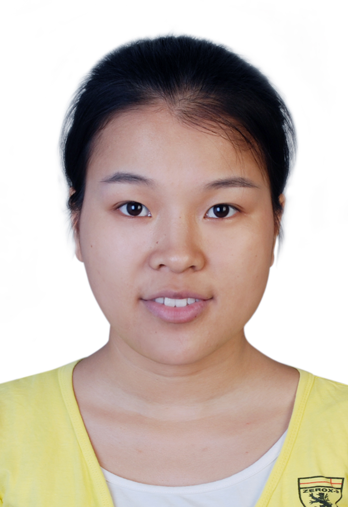

Sisi Chen
Who am I?
Dr. Chen is an Assistant Professor at the Department of Exercise Science in the College of Nursing & Health Sciences at Georgia Southwestern State University. She obtained Bachelor degree in Kinesiology from Beijing Sport University in 2014, and Master's degree in Physical Education and Sport Study from University of Macau in 2016, and Ph.D. degree in Kinesiology from Michigan State University in 2022.
Contact info
Email: chensis1(at)msu(dot)edu
Myself
Publications
Teaching
Professional Activities
- Ho, W., Ahmed, M.D., Leong, C.I., Chan, P., Niekerk, R.L, Huang, F., Chen, J., Chan, N., Silva, J., Wong, W., Ho, F., & Ip, P. (2019).
An assessment of Body Mass Index and sensitive period for overweight development in Macao students at primary school age.
Anthropological Review, 82(1), 29-41. https://doi.org/10.2478/anre-2019-0003
[TOP]